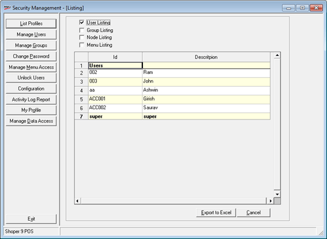

This option is used to display the list of id’s and descriptions of users, groups, nodes and menus.
How to reach: Setup > Supervisory Functions > Security Management
By default the User Listing is displayed as shown.

Select Group Listing, Node Listing, Menu Listing to display the list of Id’s and Description.